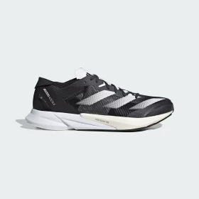

|

|
Comes with sizes:
8.5, 9, 9.5, 10, 10.5, 11, 12
--------------------------------------------------------
Chase your next PR in these Adizero Adios 8 shoes. The new-breathable lightweight mesh upper rides on a mix of superlight LIGHTSTRIKE 2.0 and LIGHTSTRIKE PRO foam. The hybrid makes these shoes fast enough for race day while being able to withstand daily training.
The updated ENERGYTORSION ROD 2.0 is embedded in the midsole and with a new third rod that runs through the midfoot to the forefoot for a snappy toe-off in each stride. The result? A pair of running shoes that help you run faster and longer than ever before — all the while providing a soft stiffness that increases the force transfer.
--------------------------------------------------------
Colour Shown: Wonder Blue/Lucid Cyan/Carbon
Style: ID6902 (Carbon), HP9721 (Lucid Cyan), BO3615 (Wonder Blue)
|